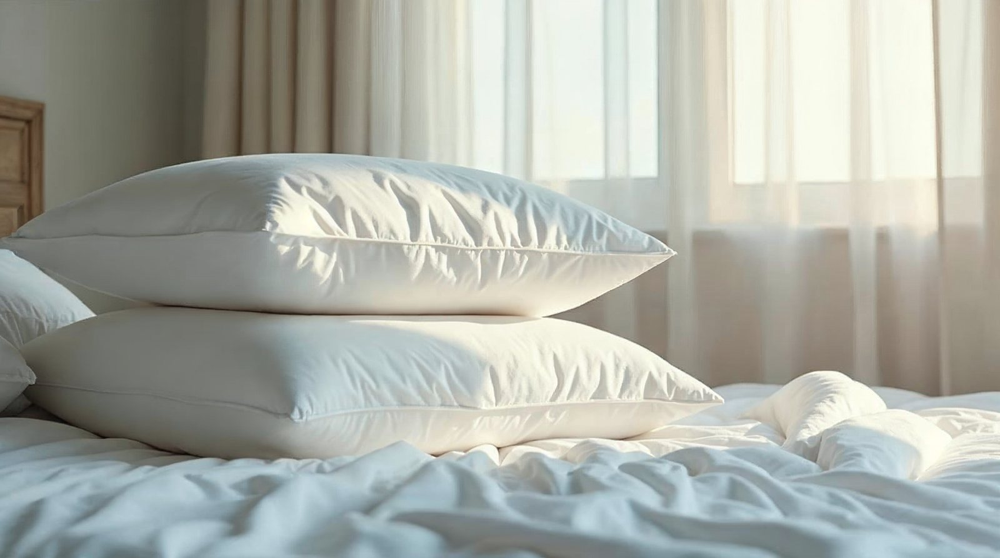
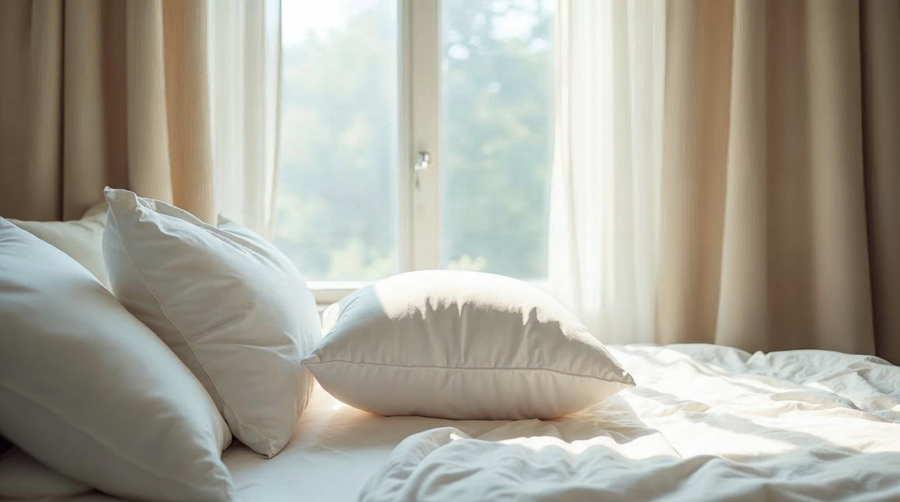
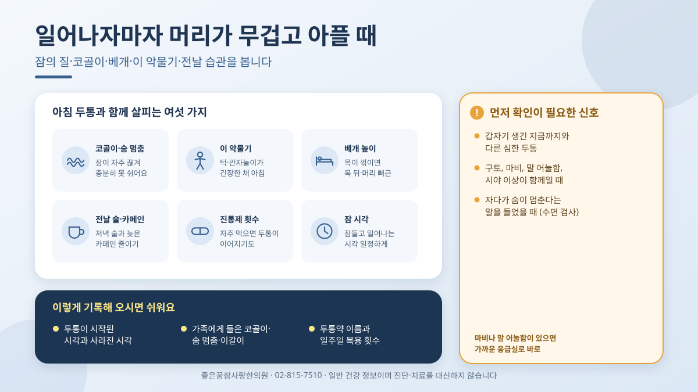

이종호 한의사 감수좋은꿈참사랑한의원 대표원장 (한의사 면허번호 19769)발행 2026-11-23 · 수정 2026-11-26
이 글의 차례
- 왜 이런 불편이 생길 수 있나요
- 아침 두통은 어떤 모양으로 나뉘나요?
- 왜 잘 잤는데도 아침에 머리가 무거울까요?
- 이런 아침이 반복되고 있지 않나요?
- 스스로 점검해 보세요
- 먼저 이렇게 여쭙니다
- 일상에서 먼저 해 볼 수 있는 것
- 베개와 자는 자세는 어떻게 맞출까요?
- 이를 악무는 습관은 어떻게 알아차리나요?
- 코골이와 숨 멈춤은 왜 먼저 확인해야 하나요?
- 두통약을 자주 먹으면 왜 두통이 이어질 수 있나요?
- 저녁 습관은 어떻게 바꾸면 좋을까요?
- 코가 막혀 입을 벌리고 자는 분은요?
- 잠드는 시각이 들쭉날쭉한 분은 어떻게 할까요?
- 몸을 움직이는 시간은 언제가 좋을까요?
- 아침 두통과 함께 자주 듣는 불편은 무엇인가요?
- 아침에 일어나서 해 볼 수 있는 것
- 얼마나 지켜보고 언제 상담할까요?
- 한의원에서 함께 살필 수 있는 경우
- 이렇게 기록해 오시면 상담이 쉬워집니다
- 이런 증상은 먼저 확인이 필요합니다
아침에 일어나자마자 머리가 무겁고 아프다면, 잠의 질과 코골이, 베개 높이, 이를 악물고 자는지, 전날의 술과 카페인, 진통제를 얼마나 자주 드시는지를 먼저 살핍니다. 잘 잔 것 같은데 일어나자마자 띵하고, 오전이 지나면 나아지지만 매일 반복돼 하루 시작이 힘들다는 분들이 있습니다.
왜 이런 불편이 생길 수 있나요
- 코를 심하게 골거나 자다가 숨이 멈추면 잠이 자주 끊기고 몸이 충분히 쉬지 못해 아침에 머리가 무거울 수 있습니다.
- 자는 동안 이를 악물거나 이를 갈면 턱과 관자놀이 근육이 긴장한 채로 아침을 맞습니다.
- 베개가 너무 높거나 낮아 목이 꺾인 채 자면 목 뒤와 머리가 뻐근해질 수 있습니다.
- 전날의 술, 늦은 카페인, 그리고 진통제를 자주 드시는 습관도 아침 두통과 관련될 수 있습니다.
아침에만 오는지도 중요합니다. 일어나서 한두 시간 안에 가벼워진다면 밤사이의 잠과 자세에서 원인을 찾는 경우가 많고, 오후로 갈수록 오히려 심해진다면 낮 동안의 자세와 눈의 피로, 긴장을 더 살펴야 합니다. 두통이 하루 중 언제 시작해 언제 사라지는지 적어 두시면 원인을 좁히는 데 큰 도움이 됩니다.
아침 두통은 어떤 모양으로 나뉘나요?
같은 아침 두통이라도 모양이 다릅니다. 머리 전체가 띵하고 멍한 느낌이라면 잠이 얕거나 자주 끊긴 경우가 많고, 관자놀이와 턱이 뻐근하다면 밤새 이를 악문 흔적일 수 있습니다. 목 뒤에서 뒤통수로 올라오는 무거움은 베개나 자는 자세와 관련된 경우가 흔합니다.
이마와 눈 주위가 묵직하고 코가 막혀 있다면 비염이나 코막힘으로 입을 벌리고 잔 것과 관련이 있을 수 있습니다. 머리 한쪽이 욱신거리고 빛과 소리가 거슬린다면 편두통의 모습일 수 있어, 아침에만 오는지 다른 때도 오는지를 함께 봅니다.
이렇게 부위와 느낌을 나누어 보면 무엇부터 살필지가 정해집니다. 그래서 진료 때 "어디가, 어떻게 아픈지"를 손으로 짚어 가며 자세히 여쭙습니다.
왜 잘 잤는데도 아침에 머리가 무거울까요?
본인은 7~8시간 잤다고 느껴도 그 사이 잠이 여러 번 얕아졌다면 몸은 충분히 쉬지 못합니다. 코골이가 심하거나 숨이 잠깐씩 멈추면 그때마다 뇌가 살짝 깨어나는데, 본인은 기억하지 못하고 아침에 머리만 무겁게 남는 경우가 많습니다.
주말에 평소보다 훨씬 오래 자고 일어나 머리가 아픈 분도 있습니다. 평일에 커피를 많이 드시는 분이 주말 아침 커피를 늦게 마시면, 그 공백이 두통으로 느껴지기도 합니다. 잠이 모자란 것만큼 지나친 잠과 불규칙한 시각도 머리를 무겁게 합니다.
겨울에 난방을 세게 하고 창문을 꼭 닫은 채 자면 방 안 공기가 탁하고 건조해집니다. 아침에 목이 칼칼하고 머리가 띵하다면 잠자리 환경도 함께 돌아보세요.
이런 아침이 반복되고 있지 않나요?
- 예를 들어 가족에게 코 고는 소리가 커서 같은 방에서 자기 힘들다는 말을 듣는 경우
- 예를 들어 일어나면 입안이 바싹 말라 있고 목이 따가운 경우
- 예를 들어 아침에 턱이 뻐근하고 이가 시린 느낌이 드는 경우
- 예를 들어 회식한 다음 날만이 아니라 평소에도 오전 내내 머리가 무거운 경우
- 예를 들어 출근 전에 두통약을 먹는 것이 습관이 된 경우
이런 아침이 일주일에 며칠이나 되는지도 함께 세어 보세요. 한 달에 한두 번이라면 전날의 생활에서 이유를 찾기 쉽지만, 거의 매일이라면 잠 자체나 몸에 굳은 긴장처럼 매일 이어지는 원인을 찾아야 합니다. 몇 주째 이어졌는지도 함께 알려 주세요.
스스로 점검해 보세요
- 코골이나 숨 멈춤을 지적받은 적이 있다
- 낮에 회의나 운전 중에 졸음이 쏟아진다
- 일어나면 입이 말라 있다
- 아침에 턱이나 관자놀이가 뻐근하다
- 베개를 바꾼 뒤 두통이 시작되었다
- 두통약을 일주일에 사흘 넘게 먹는다
- 저녁에 술이나 커피를 자주 마신다
해당하는 항목을 적어 오시면 원인을 좁혀 가는 데 도움이 됩니다. 특히 앞의 두 가지가 함께 있다면 잠 자체를 먼저 확인하는 것이 중요합니다.
먼저 이렇게 여쭙니다
- 두통은 머리의 어느 부위에 있나요?
- 코를 골거나 자다가 숨이 멈춘다는 말을 들은 적이 있나요?
- 전날 술이나 카페인을 드셨나요?
- 베개 높이와 자는 자세는 어떤가요?
- 두통약을 일주일에 며칠 드시나요?
첫 방문에서는 맥을 짚은 뒤 목과 어깨, 턱 주변 근육을 직접 눌러 보며 어디가 굳어 있는지 확인합니다. 입을 벌리고 다물 때 턱이 한쪽으로 치우치거나 소리가 나는지도 함께 봅니다.
혈압약을 드시거나 검진에서 혈압이 높다는 말을 들으셨다면 알려 주세요. 아침 혈압이 높을 때 머리가 무겁다는 분도 있어, 최근 수치를 함께 참고합니다. 함께 사는 가족이 있다면 코골이를 휴대폰으로 녹음해 오셔도 도움이 됩니다.

일상에서 먼저 해 볼 수 있는 것
- 저녁 술과 늦은 카페인 줄이기
- 베개 높이를 목이 꺾이지 않게 맞추기
- 일어나서 물 한 잔 마시고 가볍게 목 돌리기
- 잠드는 시각과 일어나는 시각을 일정하게 하기
- 낮에 이를 악물고 있는지 가끔 확인하고 위아래 이를 떼기
진료 때 지금 쓰시는 베개의 높이와 재질, 주로 어떤 자세로 잠드는지를 여쭙는 것도 이 때문입니다. 베개를 옆에서 찍은 사진 한 장을 가져오시면 이야기를 나누기 쉽고, 목과 어깨 상태를 본 뒤 높이를 어떻게 바꿔 볼지 함께 정합니다. 새 베개를 사기 전에 수건을 접어 높이를 맞춰 보는 것도 방법입니다.
베개와 자는 자세는 어떻게 맞출까요?
바로 누웠을 때 베개가 뒤통수만 받치고 목 아래가 떠 있다면 목이 꺾인 채로 밤을 보내게 됩니다. 목의 오목한 부분을 함께 받쳐 주는 높이가 좋고, 너무 푹신해 머리가 깊이 꺼지는 베개는 자는 동안 높이가 계속 달라집니다.
옆으로 자는 분은 어깨 너비만큼 베개가 조금 더 높아야 목이 일직선이 됩니다. 엎드려 자는 습관은 목을 한쪽으로 돌린 채 오래 두게 되어 아침 목 통증과 두통을 부르기 쉬우니, 옆으로 눕는 자세로 조금씩 바꿔 보세요.
베개를 바꾼 뒤에는 최소 일주일은 써 보고 판단하세요. 하루 이틀은 낯설어서 불편할 수 있습니다.
이를 악무는 습관은 어떻게 알아차리나요?
자는 동안의 이 악물기는 본인이 알기 어렵습니다. 아침에 턱이 뻐근하거나, 볼 안쪽에 이 자국이 하얗게 나 있거나, 치과에서 이가 닳았다는 말을 들었다면 의심해 볼 만합니다. 이갈이가 심하다면 치과 진료도 함께 받아 보세요.
낮 동안의 습관이 밤으로 이어지는 경우가 많습니다. 집중할 때나 긴장할 때 어금니가 맞닿아 있는지 한 시간에 한 번씩 확인해 보세요. 혀끝을 윗니 뒤에 가볍게 대고 위아래 이를 살짝 떼는 것이 편안한 자리입니다.
코골이와 숨 멈춤은 왜 먼저 확인해야 하나요?
코골이가 심하고 자다가 숨이 멈춘다는 말을 들었다면, 잠 자체가 반복해서 끊기고 있을 수 있습니다. 이런 상태에서는 베개나 생활 습관만 바꿔서는 아침 두통이 잘 달라지지 않아, 수면 검사가 가능한 의료기관에서 먼저 확인하시길 권합니다.
체중이 늘면서 코골이가 심해졌다는 분, 술을 마신 날 유독 코를 많이 곤다는 분도 많습니다. 저녁 술을 줄이고 옆으로 누워 자는 것만으로 코골이가 줄어드는 경우도 있어, 검사와 함께 생활 습관도 손보시길 권합니다.
두통약을 자주 먹으면 왜 두통이 이어질 수 있나요?
두통약을 한 달에 열흘 넘게 드시는 생활이 몇 달 이어지면, 약 기운이 떨어지는 때마다 머리가 다시 아파지는 흐름이 생길 수 있습니다. 아침마다 약을 먹어야 하루를 시작할 수 있다고 느끼신다면 이 고리를 의심해 볼 만합니다.
그렇다고 스스로 갑자기 약을 끊으라는 뜻은 아닙니다. 지금 드시는 약 이름과 일주일에 몇 번 드시는지를 기록해 오시면, 두통을 일으키는 다른 원인을 함께 줄여 가면서 약을 찾는 날이 줄어드는지 지켜봅니다. 다른 병원에서 처방받아 드시는 약이 있다면 처방한 의사와 상의하는 것이 먼저입니다.
저녁 습관은 어떻게 바꾸면 좋을까요?
술은 잠드는 것을 돕는 것처럼 느껴지지만, 새벽에 잠을 얕게 만들고 코골이를 심하게 해 아침 두통을 부르기 쉽습니다. 술을 드신다면 잠들기 서너 시간 전에는 마치시고, 물을 함께 넉넉히 드세요.
커피와 에너지 음료, 진한 녹차는 오후 2시 이후로는 줄여 보세요. 잠자리에 들기 직전 야식은 위를 바쁘게 해 잠을 얕게 만듭니다. 늦게 먹었다면 바로 눕지 말고 조금 시간을 두세요.
잠자리 방은 약간 서늘하게, 습도는 너무 건조하지 않게 맞추는 것이 좋습니다. 잠들기 전 한 시간은 휴대폰과 모니터 화면을 멀리하고, 조명을 낮춰 몸이 밤을 알아차리게 해 주세요.
코가 막혀 입을 벌리고 자는 분은요?
비염이나 코막힘이 있으면 자는 동안 입으로 숨을 쉬게 되고, 그만큼 잠이 얕아지고 입과 목이 마릅니다. 아침에 이마와 눈 주변이 묵직하다면 코 상태도 함께 살펴야 합니다.
코막힘이 계절마다 심해진다면 이비인후과 진료를 함께 받아 보세요. 잠자리 이불과 베개 커버를 자주 빨고, 방을 너무 건조하지 않게 하는 것도 도움이 됩니다. 한의원에서는 코막힘과 함께 몸 전체의 상태를 살펴 침과 한약 상담 가운데 맞는 방법을 함께 고려합니다.
잠드는 시각이 들쭉날쭉한 분은 어떻게 할까요?
야근이나 교대 근무로 잠드는 시각이 날마다 다르면, 같은 시간을 자도 몸이 덜 쉬는 경우가 많습니다. 이런 분일수록 일어나는 시각만이라도 가능한 한 일정하게 지키는 것이 아침 두통을 줄이는 데 도움이 됩니다.
늦게 퇴근한 날 바로 잠자리에 들기 어렵다면, 씻고 조명을 낮춘 채 20~30분 정도 조용히 쉬는 시간을 두세요. 머리가 아직 일하는 상태로 누우면 잠이 얕아지기 쉽습니다.
몸을 움직이는 시간은 언제가 좋을까요?
낮에 몸을 충분히 움직이면 밤잠이 깊어지는 데 도움이 됩니다. 점심 뒤 15분 걷기나 퇴근길 한 정거장 먼저 내려 걷기처럼 생활 속에서 시작해 보세요.
다만 잠들기 직전의 격한 운동은 몸을 오히려 깨워 잠을 늦출 수 있습니다. 저녁에 운동을 하신다면 잠들기 두세 시간 전에 마치고, 그 뒤에는 가볍게 몸을 늘리는 정도로 마무리하세요. 목과 어깨를 많이 쓰는 근력 운동 뒤에 두통이 심해진다면 그 내용도 알려 주세요.
아침 두통과 함께 자주 듣는 불편은 무엇인가요?
아침 두통이 잦은 분들은 오후에 졸음이 쏟아지고 집중이 잘 되지 않는다고 많이 말씀하십니다. 잠이 깊지 못하면 낮의 기운과 기분도 함께 처지기 쉽습니다.
목과 어깨가 늘 뻐근하고 오후가 되면 눈이 피로하다는 분도 많습니다. 이런 불편이 함께 있다면 두통 하나만이 아니라 잠과 자세, 긴장을 한꺼번에 살펴보는 것이 좋습니다.
아침에 일어나서 해 볼 수 있는 것
일어나자마자 커튼을 걷고 물 한 잔을 천천히 마셔 보세요. 밤사이 마른 몸에 수분을 채우는 것만으로 머리가 조금 가벼워지는 분이 있습니다.
그다음 목을 앞뒤로 천천히 숙였다 젖히고, 어깨를 크게 다섯 번 돌려 주세요. 턱이 뻐근하다면 입을 크게 벌렸다 다물기를 천천히 몇 번 하고, 관자놀이를 손끝으로 둥글게 문질러 줍니다. 아침 샤워 때 따뜻한 물을 목 뒤에 1~2분 대 주는 것도 좋습니다.
얼마나 지켜보고 언제 상담할까요?
베개와 저녁 습관을 바꾸고 2주쯤 두통 기록을 해 보세요. 두통이 있는 아침이 줄어들고 있다면 방향이 맞는 것입니다.
생활을 바꿨는데도 일주일에 사흘 넘게 아침 두통이 이어지거나, 두통약 없이는 오전을 버티기 어렵다면 진료를 받아 보세요. 코골이와 낮 졸음이 함께 있다면 수면 검사부터 먼저 받아 보시길 권합니다.

한의원에서 함께 살필 수 있는 경우
- 아침 두통이 반복되는 경우 잠의 모양과 목·어깨 긴장을 함께 살핍니다.
- 이를 악물고 자서 턱과 관자놀이가 뻐근한 경우 턱과 머리 주변 근육을 함께 살핍니다.
- 잠이 얕고 자주 깨는 경우 생활 리듬을 함께 살핍니다.
좋은꿈참사랑한의원에서는 맥부터 짚으며 두통의 모습과 잠, 생활 습관을 여쭙고, 위험 신호가 없는지 살핍니다. 그다음 목·어깨와 턱의 긴장을 확인한 뒤 침, 약침, 추나, 한약 상담 가운데 상태에 맞는 방법을 정합니다. 자다가 숨이 멈춘다는 말을 들으셨다면 수면 검사가 가능한 의료기관을 먼저 안내합니다.
이렇게 기록해 오시면 상담이 쉬워집니다
- 두통이 있었던 날, 시작 시각, 사라진 시각
- 전날의 술, 카페인, 잠든 시각
- 가족에게 들은 코골이·숨 멈춤·이갈이
- 두통약 이름과 일주일 복용 횟수
기록은 일어나자마자 휴대폰 메모에 한 줄로 남기면 됩니다. '두통 있음·뒤통수, 어제 맥주 2캔, 12시 취침'처럼 적어 두면 2주 뒤에 어떤 날 머리가 무거웠는지 흐름이 보입니다.
이런 증상은 먼저 확인이 필요합니다
- 갑자기 생긴 지금까지와 다른 심한 두통
- 두통과 함께 구토, 마비, 말이 어눌해짐, 시야 이상이 있는 경우
이런 신호가 있으면 한의원보다 가까운 병원이나 응급실을 먼저 찾으세요.

여쭙는 것
- 두통은 머리의 어느 부위에 있나요?
- 코를 골거나 자다가 숨이 멈춘다는 말을 들은 적이 있나요?
- 전날 술이나 카페인을 드셨나요?
생활에서 해 볼 것
- 저녁 술과 늦은 카페인 줄이기
- 베개 높이를 목이 꺾이지 않게 맞추기
- 일어나서 물 한 잔 마시고 가볍게 목 돌리기
한의원에서 함께 살필 것
- 아침 두통이 반복되는 경우 잠의 모양과 목·어깨 긴장을 함께 살핍니다.
- 이를 악물고 자서 턱과 관자놀이가 뻐근한 경우 턱과 머리 주변 근육을 함께 살핍니다.
- 잠이 얕고 자주 깨는 경우 생활 리듬을 함께 살핍니다.
먼저 확인이 필요한 신호
- 갑자기 생긴 지금까지와 다른 심한 두통
- 두통과 함께 구토, 마비, 말이 어눌해짐, 시야 이상이 있는 경우
한눈에 보는 표
| 구분 | 핵심 |
|---|---|
| 여쭙는 것 | 두통은 머리의 어느 부위에 있나요? 코를 골거나 자다가 숨이 멈춘다는 말을 들은 적이 있나요? |
| 생활에서 해 볼 것 | 저녁 술과 늦은 카페인 줄이기 베개 높이를 목이 꺾이지 않게 맞추기 |
| 한의원에서 함께 살필 것 | 아침 두통이 반복되는 경우 잠의 모양과 목·어깨 긴장을 함께 살핍니다. 이를 악물고 자서 턱과 관자놀이가 뻐근한 경우 턱과 머리 주변 근육을 함께 살핍니다. |
| 먼저 확인이 필요한 신호 | 갑자기 생긴 지금까지와 다른 심한 두통 두통과 함께 구토, 마비, 말이 어눌해짐, 시야 이상이 있는 경우 |
자주 묻는 질문
진통제를 매일 먹어도 되나요?
진통제를 자주 드시면 오히려 두통이 이어지는 경우가 있어 복용 횟수를 알려 주세요.
두통 일기가 도움이 되나요?
네. 두통이 온 시각과 잠, 음식, 상황을 적으면 함께 보기 좋습니다.
베개는 어떤 높이가 좋나요?
바로 누웠을 때 얼굴이 천장을 편하게 보고, 옆으로 누웠을 때 목이 한쪽으로 꺾이지 않는 높이가 일반적입니다.
진료 시간은 어떻게 되나요?
좋은꿈참사랑한의원은 평일 09:30~20:00(점심 13:00~14:00), 토·일·공휴일 09:30~15:00에 진료합니다.
좋은꿈참사랑한의원은 재진 때 지난번 이야기부터 이어서 여쭙니다. 진료시간과 예약은 오시는 길에서 확인하세요.
어디서 상담받을 수 있나요?
좋은꿈참사랑한의원은 서울 동작구 만양로2길 2 신성빌딩 3층·5층(서울 동작구 상도동, 7호선 상도역 3번 출구 근처)에 있습니다. 한의사 3명(이종호 대표원장, 조영기 수석진료원장, 정원영 진료원장)이 진료합니다. 진료시간은 평일 09:30~20:00(점심 13:00~14:00), 토·일·공휴일 09:30~15:00이며, 방문 전 전화로 확인을 권합니다. 예약은 네이버 예약, 카카오톡 상담, 전화 02-815-7510로 받습니다.
이 글은 일반적인 건강 정보이며 개인의 진단이나 치료를 대신하지 않습니다. 증상이 있거나 복용 중인 약이 있다면 진료를 통해 확인하세요. 치료 효과는 개인마다 다를 수 있습니다.
작성 기준: 일반적으로 알려져 있는 건강 정보를 참고해 정리했습니다(대표원장 감수). 증상 기록은 1~2주 동안 하루 1회, 비슷한 시간에 적어 오시면 지난 상태와 비교하기 쉽습니다.